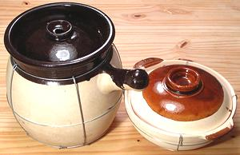
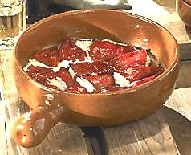
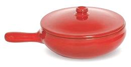
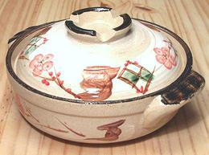
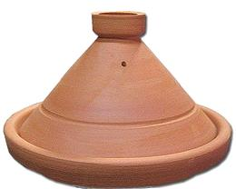
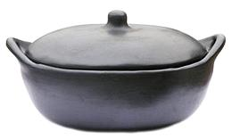

SAFARI
Users
General & History
Even the Irish cauldron was originally made of clay. Later it was made of bronze (from when the Celts invaded) and iron (from the Roman Empire). Most other cultures around the world also cooked in clay pots of various description, and this cookware has modern decendents in most of these cultures.
The reason these primitive pots have survived and are still made today is the superior results they produce for slow cooked soups, stews and bean dishes.
Using Clay Cookware
- In general (unless the manufacturer says otherwise), a clay pot that's new or hasn't been used for some time is soaked in water for about 8 hours. After that, before each use it's soaked only for 5 minutes to an hour, depending on type.
- Always start on a cold burner with very low well distributed heat. Heat should be gradually increased but should never exceed low-medium. It is never necessary because clay pot cooking is always slow cooking.
- If you have an electric stove or one with ceramic burners, use a heat diffuser between the burner and the cookware.
- When taking the cookware off the heat, never set on a metal, tile, stone or other surface with good heat conductivity. Wood, cork, a folded towel and the like are fine.
- Cook only fairly liquid recipes in clay pots - soups and stews. They are not for frying or other dry cooking. If doing a braise, brown the meat in a skillet, then add it to the clay pot with the other ingredients.
- Do not ever allow a clay pot to remain on the heat with nothing in it.
- All of the cookware on this page can also be used in the oven, but its best not to preheat the oven, so add a little time to the recipe.
- Despite all these precautions, a clay pot can still crack. For hairline cracks Paula Wolfert says she's had great success simmering them in milk - the insoluble casein penetrates and acts like glue.
Common Stovetop Clay Cookware
Chinese Sand Pot
 These clay pots are still very much used in China, so they are easily available from Asian markets in North America, and in a number of sizes. Aside from the shapes shown, the low form is also made with a handle on the side.These pots are made from a type of clay said to be available only in China. They are glazed on the inside, except around the rim, but only in a few patches on the outside.
Clay pot cooking expert Paula Wolfert suggests using these for European clay pot recipes because they can be had cheaply at Asian markets, while European clay is really quite expensive.
Some say these can be used on the stovetop without previously soaking
in water, but I don't press my luck. The low photo specimen is 8-1/2 inches
diameter, 3 inches deep and has a practical cooking capacity of 5 cups.
The tall one is 8-1/2 inches diameter, 9 inches tall and has a practical
capacity of 22 cups.
Spanish Cazuela
 These clay pots have been used in Spain since the time of the Roman Empire and are still very much used today, both on the stove top and in the oven. They are made round and oval, with handle and without, and in many sizes. Traditionally they are without a lid, though some are made as lidded casseroles today. Stewing pots (Olla) are also made of the same clay, but always have lids.
As with other clay pots these need a long soak in water before you
can use them on the stovetop for the first time. A wide selection of
excellent cazuelas is available from La Tienda.
Photo © Source.
Italian Terracota
 Italians are very big on cooking in clay, and make terracota (baked earth) cookware of every shape and size. This cookware is glazed in many brilliant colors, except the bottom. It should be prepared for use by soaking as with the other clay cookware. Even if a piece were glazed all over (which this is not) soaking would be in order. A wide selection is available from Terra Allegra Imports or retailers carrying their products. Photo © Source.
Japanese Donabe
 These pots are still very much used in Japan and many sizes, shapes and decorative patterns are sold in North America, from US $15 on up. The photo specimen is fairly small at 7-1/2 inches diameter and 2-1/8 inches deep. It was purchased in an Asian market in Los Angeles, but I don't remember where or how much I paid for it. Donabe are generally attractively decorated because they are often carried to the table when cooking is done, or the cooking may be done at the table.
Seasoning instructions vary, but the most common are: (1) Fill it with
water and leave it overnight, (2) Fill it with water and slowly heat it to
a slow simmer for at least 1 hour, Let cool naturally. (3) Fill it 80% with
water. Add cooked rice until it is completely full. Heat slowly and simmer
for at least one hour. Let cool naturally. All agree on one point - .
the outside bottom should be completely dry before placing it on the burner.
Moroccan Tagine
 It seems everybody and his dog is making tagines these days, out of whatever materials (All Clad had one for US $200), but real ones are made out of unglazed or partially glazed clay - and you can get one like the photo for US $44 from Berber Trading Co.. Note that glazed tagines with fancy decorations are used for serving only, never for cooking.
The results from a clay tagine improve with repeated use, which can't be
said of metal and ceramic coated versions. Berber Trading's recommendations
for seasoning are: (1) soak in water for more than 1 hour. (2) Let dry for
5 minutes. (3) Rub the inside of the base and lid generously with olive oil.
(4) Place in a cold oven and set the temperature to 350°F/177°C and
bake for 1-1/2 to 2 hours. (5) Turn off the oven and let cool naturally.
Photo ©
Source.
Columbian La Chamba
 Made of micaceous clay, these pots are strong and stand up well to direct heat. They can be found on the Web, from folks like Ancient Cookware. Paula Wolfert says to season them by pouring in milk to 1 inch deep, then bringing slowly to a simmer and simmering for 30 minutes, then let cool slowly before draining. Rinse and dry. Photo © Source.
Links
- C1 - Spanish Imports - La Tienda, 3601 La Grange Parkway, Toano VA 23168, 800-710-4304
- C2 - Italian Terracota - Terra Allegra Imports, 590 King Street, Hanover, MA 02339, 781-771-8677.
- C3 - La Chamba Cookware - Ancient Cookware, 7346 SW 48th Street Miami, FL 33155 1 855 586-0070.
- C4 - Tagines - Berber Trading Company, 8330 Biscayne Boulevard, Suite #1 Miami, FL 33138
- C5- Spanish Imports - La Española Meats, Inc. 25020 Doble Avenue, Harbor City, CA 90710. 1-310-539-0455.